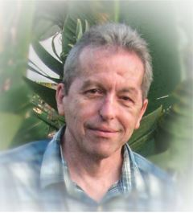

Please note: the AAS Obituaries are temporarily being hosted on this website while their full content is being ingested into the PubPub publishing platform newly adopted by the Bulletin of the American Astronomical Society. When the migration is complete, your existing links will take you to the final, migrated content. Contact peter.williams@aas.org with any questions.
Alexei Moisseyevich Khokhlov (1954-2019)
Alexei M. Khokhlov died on Saturday the 4th of May 2019.
Alexei Moisseyevich Khokhlov was born in Moscow on April 22, 1954. He died at age 65 from complications related to treatments for esthesioneuroblastoma, a rare form of cancer.
Alexei’s parents were prominent physicists, Vera L. Khokhlova and Moissey Z. Khokhlov. He spent his childhood at the Crimean Astrophysical Observatory, where his parents worked until he started school in 1961 in Moscow. In 1980 he graduated from Moscow State University with Honors. He completed his Ph. D. in 1983 at the Institute of Applied Mathematics and started working at what is currently known as the Institute of Astronomy of the Russian Academy of Sciences. In 1991-1992 he worked as a Visiting Fellow at the Max Planck Institute for Astrophysics in Garching, near Munich. Between 1992 and 1996 he worked at the University of Texas in Austin, as a Postdoctoral Associate, then a Research Associate, and finally as a Research Scientist. He then spent seven years as a Research Physicist at the Naval Research Laboratory in Washington, DC. In 2003 he became a Professor in the Department of Astronomy and Astrophysics and the Enrico Fermi Institute at the University of Chicago.
Alexei is best known for his fundamental contributions to our understanding of thermonuclear-powered supernovae (exploding white dwarf stars). These explosions are so bright they can be seen at immense distances. They are therefore a key tool astronomers use to measure distances and thereby determine the cosmological parameters of the universe. They are also a major source of the heavy elements in the universe and the primary source of iron-peak elements.
When Alexei began working on thermonuclear-powered supernovae, the canonical model was a white dwarf star with a mass near 1.4 solar masses (the Chandrasekhar mass limit) accreting matter from a binary companion star (like the Sun, or perhaps a giant star). As the mass of the white dwarf star gradually grows, the density in its center increases until the mixture of carbon and oxygen in its core ignites. Astrophysicists proposed that a supersonic burning wave (called a “detonation wave”) would then sweep through the star, incinerating all of the matter in it and exploding the star.
However, spectroscopic observations showed that the debris of an exploding white dwarf consists of both intermediate-mass elements and heavier iron-peak elements. This posed a problem for the detonation-wave model. Burning via an ordinary flame would create intermediate-mass elements but no iron-peak elements and would release far too little energy. On the other hand, burning via a detonation wave would release enough energy and create iron-peak elements. But it would create almost no intermediate-mass elements.
To solve this conundrum, Alexei proposed the delayed-detonation model in which burning begins as an ordinary nuclear flame but transitions to a supersonic detonation wave, thus enabling enough energy to be released and both intermediate-mass and iron-peak elements to be produced. Essentially all thermonuclear-powered supernova models considered today are of this type. Alexei was elected a Fellow of the American Physical Society for his contributions to supernova science.
Alexei was also known for his ingenuity in the development of gauge instabilities in 3+1 (three space dimensions plus time) formulations of General Relativity. Alexei had a talent for simplifying complex problems and finding toy examples that mimic the main problem in order to understand how to tackle it. He was able to do this at a time when no one knew how to solve Einstein’s equations numerically. Alexei was also interested in theoretical aspects of black holes, and had also studied the physics of the interior of a spherical, charged black hole with a scalar field. This work is highly cited in the field, since it found interesting phenomenology for singularities in the interiors of black holes.
Alexei liked cross-country car trips that involved camping and hiking in national parks. He was an avid photographer and reader. He traveled across the United States several times in his trusty 4 Runner and took thousands of digital images. We hope to have a public display of the best of those images. Amongst his favorite books were The Tale of Genji, written a thousand years ago by Murasaki Shikibu, The Forsyte Saga by John Galsworthy, and, particularly, The Master and Margarita by Mikhail Bulgakov, because the presence of certain odd characters and the occurrence of particularly absurd events seemed somehow fitting in Soviet Russia. Alexei also loved classical music. His favorite piece was Sheherazade by Nikolai Rimsky-Korsakov.
Alexei was survived by his wife of 32 years, three children, two grandchildren, and one sister.
Obituary written by: Almadena Chtchelkanova, Donald Lamb, and Vasileios Paschalidis